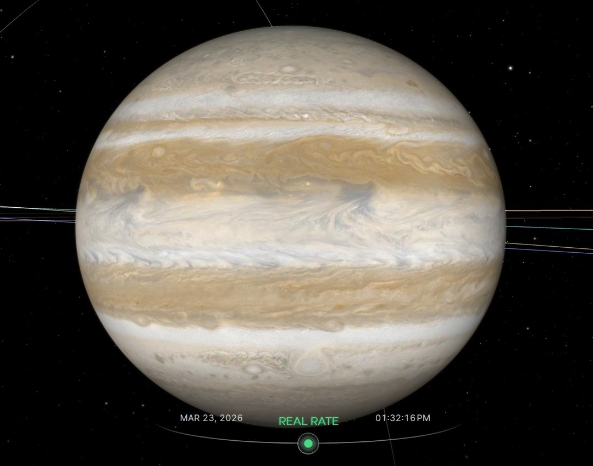
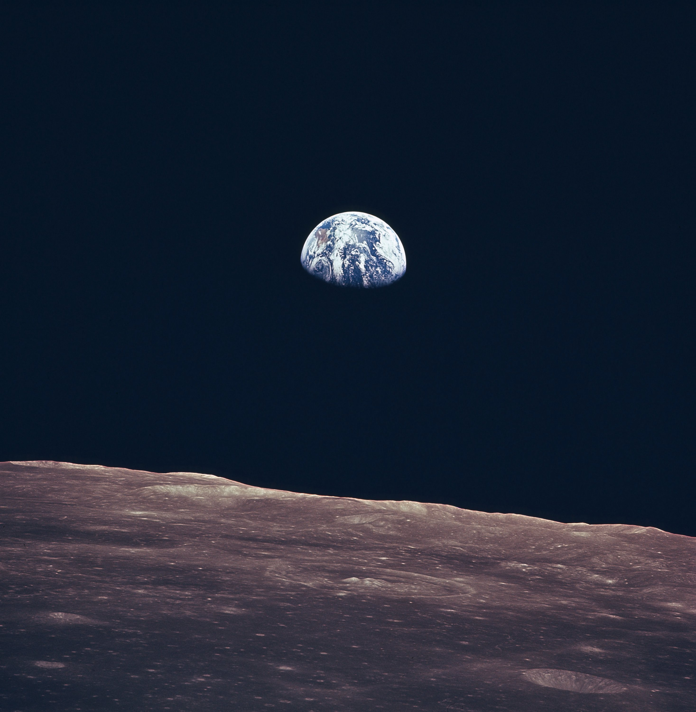
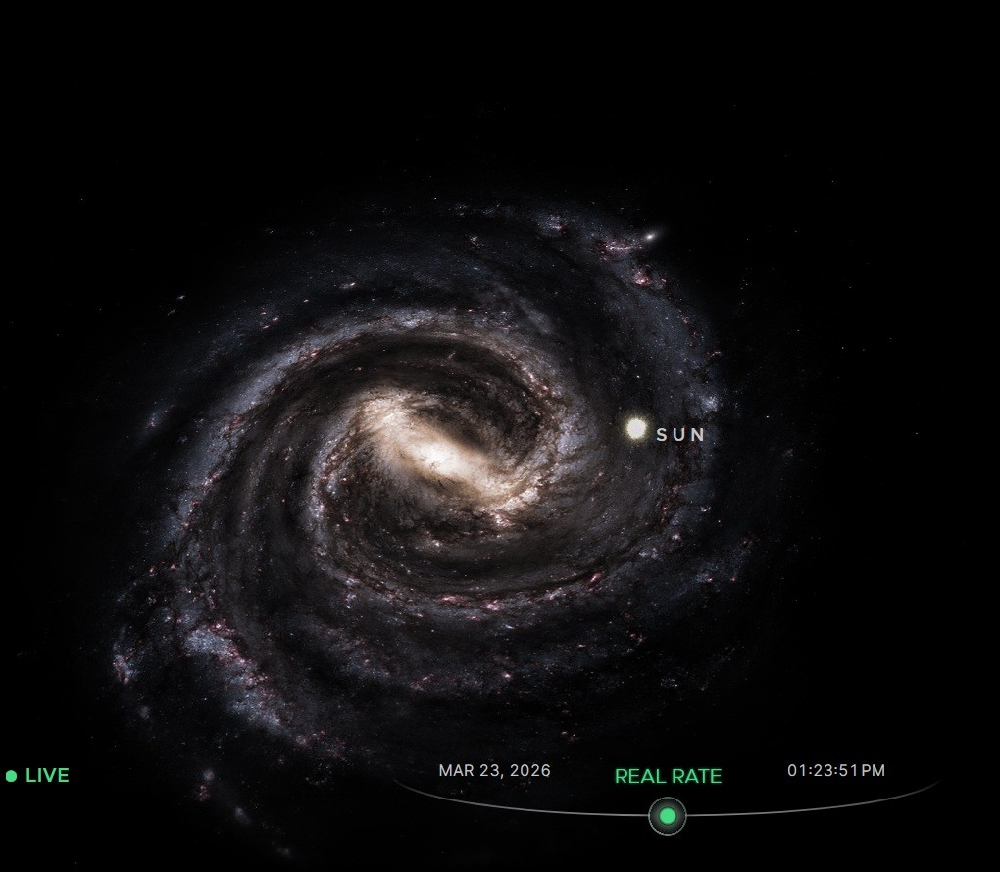

  </header>

  <main>
    <section class="gallery-section">
      <h2>Menu Items</h2>
      <div class="gallery" id="gallery">
        
        
        
        
        
        
      </div>
    </section>

    <section class="preview-section">
      <h2>Preview</h2>
      <div id="previewBox">
        
        <p id="imageTitle">Milky Way</p>
        <button id="addFavoriteBtn">Add to Favorites</button>
        <p id="message"></p>
      </div>
    </section>

    <section class="favorites-section">
      <h2>Favorites</h2>
      <div id="favoritesContainer"></div>
    </section>
  </main>

  <footer>
    <p>&copy; 2026 Andrew Miller. All images used for school assignment purposes.</p>
  </footer>

  <script src="gallery.js"></script>
  <link rel="stylesheet" href="gallery.css">
</body>
</html>   
